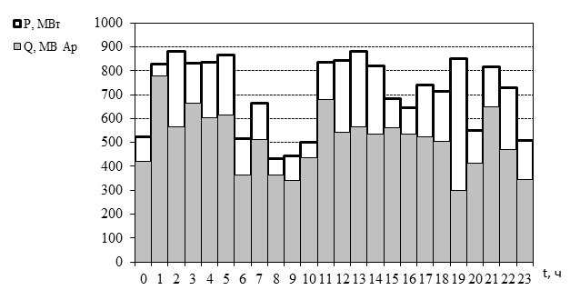

Рисунок 1. Суточный график нагрузки
предприятия с изображением активной и
реактивной мощностей, односменный режим
Определение режимов работы по суточным графикам нагрузок
Для того, чтобы построить суточные графики нагрузок предприятия, необходимо знать показания электрических приборов, снятых с определенным интервалом. Как правило, интервалы Δt составляют полчаса или час. Для удобства анализа и обработки данных графики строят ступенчатыми. Нагрузку в интервале времени одной ступени (Δt) считаем неизменной, она равна средней нагрузке за принятый интервал времени.
Проанализировав построенные графики, можно не только сделать выводы о нагрузке предприятия, но и определить режим работы предприятия (односменный, двухсменный или трехсменный).
На рисунке 1 представлен график с односменным режимом работы. На нем отображен «всплеск» нагрузки, с 7 до 15 час, это соответствует времени одной рабочей смены.
Рисунок 2. Суточный график нагрузки предприятия
с изображением активной и реактивной мощностей,
двухсменный режим
Посмотрев на график при трёхсменном режиме работы, можно увидеть, что нагрузка присутствует на протяжении всех суток.
На рисунке 2 представлен график двухсменного режима работы. На графике всплеск нагрузки длится дольше, чем в первом случае, всплеск длится с 8 до 23 часов.

Рисунок 3. Суточный график нагрузки предприятия с изображением активной и реактивной мощностей, трёхсменный режим